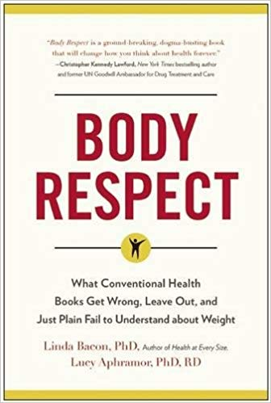
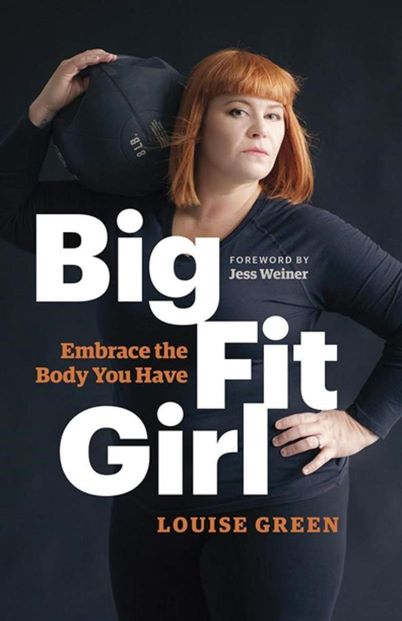

August 2019 Fat!So?

Fat? Chunky? Less than svelte? So what! In this hilarious and eye-opening book, fat and proud activist/zinester Marilyn Wann takes on Americas' biggest fear—worse than the fear of public speaking or nuclear weapons—our fear of fat.Statistics tell us that about a third of Americans are fat, and common sense adds that just about everyone, fat or thin, male or female, has worried about their appearance. FAT!SO? weighs in with a more attractive alternative: feeling good about yourself at any weight—and having the style and attitude to back it up. Internationally recognized as a fat-positive spokesperson, Wann has learned that you can be absolutely happy, healthy, and successful...and fat. With its hilarious and insightful blend of essays, quizzes, facts, and reporting, FAT!SO? proves that you can be out-and-out fabulous at any size.
May / June / July 2019 Body Respect
Mainstream health science has let you down. Weight loss is not the key to health, diet and exercise are not effective weight-loss strategies and fatness is not a death sentence. You’ve heard it before: there’s a global health crisis, and, unless we make some changes, we’re in trouble. That much is true—but the epidemic is NOT obesity. The real crisis lies in the toxic stigma placed on certain bodies and the impact of living with inequality—not the numbers on a scale. In a mad dash to shrink our bodies, many of us get so caught up in searching for the perfect diet, exercise program, or surgical technique that we lose sight of our original goal: improved health and well-being. Popular methods for weight loss don’t get us there and lead many people to feel like failures when they can’t match unattainable body standards. It’s time for a cease-fire in the war against obesity. Dr. Linda Bacon and Dr. Lucy Aphramor’s Body Respect debunks common myths about weight, including the misconceptions that BMI can accurately measure health, that fatness necessarily leads to disease, and that dieting will improve health. They also help make sense of how poverty and oppression—such as racism, homophobia, and classism—affect life opportunity, self-worth, and even influence metabolism. Body insecurity is rampant, and it doesn’t have to be. It’s time to overcome our culture’s shame and distress about weight, to get real about inequalities and health, and to show every body respect.
April 2019 Shrill

Shrill is an uproarious memoir, a feminist rallying cry in a world that thinks gender politics are tedious and that women, especially feminists, can't be funny. Coming of age in a culture that demands women be as small, quiet, and compliant as possible--like a porcelain dove that will also have sex with you--writer and humorist Lindy West quickly discovered that she was anything but. From a painfully shy childhood in which she tried, unsuccessfully, to hide her big body and even bigger opinions; to her public war with stand-up comedians over rape jokes; to her struggle to convince herself, and then the world, that fat people have value; to her accidental activism and never-ending battle royale with Internet trolls, Lindy narrates her life with a blend of humor and pathos that manages to make a trip to the abortion clinic funny and wring tears out of a story about diarrhea. With inimitable good humor, vulnerability, and boundless charm, Lindy boldly shares how to survive in a world where not all stories are created equal and not all bodies are treated with equal respect, and how to weather hatred, loneliness, harassment, and loss, and walk away laughing. Shrill provocatively dissects what it means to become self-aware the hard way, to go from wanting to be silent and invisible to earning a living defending the silenced in all caps.
February / March 2019 Dumplin'
The #1 New York Times bestseller and feel-good YA of the year—about Willowdean Dixon, the fearless, funny, and totally unforgettable heroine who takes on her small town’s beauty pageant. Self-proclaimed fat girl Willowdean Dickson (dubbed “Dumplin’” by her former beauty queen mom) has always been at home in her own skin. Her thoughts on having the ultimate bikini body? Put a bikini on your body. With her all-American beauty best friend, Ellen, by her side, things have always worked . . . until Will takes a job at Harpy’s, the local fast-food joint. There she meets Private School Bo, a hot former jock. Will isn’t surprised to find herself attracted to Bo. But she is surprised when he seems to like her back. Instead of finding new heights of self-assurance in her relationship with Bo, Will starts to doubt herself. So she sets out to take back her confidence by doing the most horrifying thing she can imagine: entering the Miss Clover City beauty pageant—along with several other unlikely candidates—to show the world that she deserves to be up there as much as any girl does. Along the way, she’ll shock the hell out of Clover City—and maybe herself most of all.
January 2019 Big Big Love
Big Big Love is the only one-stop-shopping handbook on relationships, sexuality, and big sexy confidence for people of all genders, sizes, and sexual orientations who know that a fantastic love life doesn’t necessarily have anything to do with the number on the bathroom scale. Covering everything from dating to sex toys to getting on top, this guide also features tips on navigating tricky topics like making peace with your belly, coping with weight-related prejudice, and creating a happy, satisfying sex life in a culture where no body is ever perfect enough. This freshly illustrated update of the 2000 cult classic features new interviews with body-acceptance activists, health coaches, psychologists, and more, plus hundreds of quotes from fat folks and those who love them selected from a survey conducted exclusively for the book. From taking your clothes off to BDSM to fat admiration to tips for successful long-term relationships, Big Big Love’s savvy, sane advice can help you tackle every hot-button issue you may confront in the bedroom and in love.
December 2018 Big Fit Girl
In Big Fit Girl, Louise Green describes how the fitness industry fails to meet the needs of plus-size women and thus prevents them from improving their health and fitness. By telling her own story of how she stopped dieting, got off the couch, and unleashed her inner athlete—as well as showcasing similar stories from other women—Green inspires other plus-size women to do the same. Green also provides concrete advice, based on the latest research, about how to get started, how to establish a support team, how to choose an activity, what kind of clothing and gear work best for the plus-size athlete, how to set goals, and how to improve one’s relationship with food. And she stresses the importance of paying it forward—for it is only by seeing plus-size women in leadership roles that other plus-size women will be motivated to stop trying to lose weight and get fit instead.
November 2018 Landwhale
Jes Baker burst onto the body positivity scene when she created her own ads mocking Abercrombie & Fitch for discriminating against all body types--a move that landed her on the Today Show and garnered a loyal following for her raw, honest, and attitude-filled blog missives. Building on the manifesta power of Things, this memoir goes deeply into Jes's inner life, from growing up a fat girl to dating while fat. With material that will have readers laughing and crying along with Jes's experience, this new book is a natural fit with her irreverent, open-book style. A deeply personal take, Landwhale is a glimpse at life as a fat woman today, but it's also a reflection of the unforgiving ways our culture still treats fatness, all with Jes's biting voice as the guide.